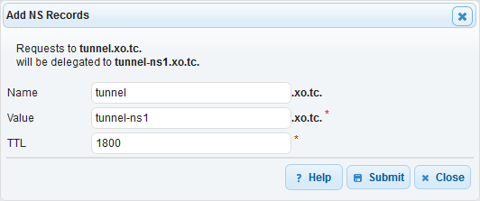

A while ago I wrote a post on tunneling data over DNS that was a technical explanation of what's going on. This post is a tutorial on how to setup a DNS tunnel with iodine.
I'm using DNS Made Easy as my main DNS provider, Debian on an EC2 for the DNS server, and Arch Linux and Windows as the client. I haven't tried this on other setups but it should be more or less the same.
Setting up the server
Start a t2.micro EC21 running Debian, updated all the packages and reboot2.
sudo apt-get update && sudo apt-get dist-upgrade && sudo reboot
Then install iodine
sudo apt-get install iodine
Setup the domain name to use for the tunnel, in my case I used tunnel.xo.tc. I created a sub-domain and delegated it to a DNS servers called tunnel-ns1.xo.tc.
In DNS Made easy go to NS Records and hit the Add button.

Next we need to setup the A record for the name server we have specified.
Then on the EC2 server
sudo iodined -f 10.73.72.1 -c tunnel.xo.tc
-fKeeps iodined running on the forground, it's not nessacery but it makes it easier to stop and start.10.73.72.1is the local network that iodine will create. Use an address that is not on your LAN.-cDisables checking of the client IP address, you will only need it if your DNS queries are getting routed through a cluster of DNS servers and so your traffic will be coming from diffrent IP addresses.tunnel.xo.tcis the domain to use as a tunnel.
Check your server is working with iodine check tool
Arch Linux Client
On the client (Arch Linux)
sudo pacman -S iodine
sudo iodine -f tunnel.xo.tc
Now if you run ip addr you should see a new network connection
[michael@ezreal ~]$ sudo ip addr
# ...
4: dns0: <POINTOPOINT,MULTICAST,NOARP,UP,LOWER_UP> mtu 1130 qdisc fq_codel state UNKNOWN group default qlen 500
link/none
inet 10.73.72.2/27 scope global dns0
valid_lft forever preferred_lft forever
[michael@ezreal ~]$ ping -c 4 10.73.72.1
PING 10.73.72.1 (10.73.72.1) 56(84) bytes of data.
64 bytes from 10.73.72.1: icmp_seq=1 ttl=64 time=346 ms
64 bytes from 10.73.72.1: icmp_seq=2 ttl=64 time=334 ms
64 bytes from 10.73.72.1: icmp_seq=3 ttl=64 time=346 ms
64 bytes from 10.73.72.1: icmp_seq=4 ttl=64 time=338 ms
--- 10.73.72.1 ping statistics ---
4 packets transmitted, 4 received, 0% packet loss, time 3001ms
rtt min/avg/max/mdev = 334.381/341.482/346.673/5.310 ms
Congratulations, you now have a tunnel through DNS.
Windows Client
First we need to install the Install the TAP32 driver. To do this download the OpenVPN installer3 and when you get to Choose Components step, you only need to pick TAP Virtual Ethernet Adapter.
The rest is more or less the same as Linux, download the latest binary, extract them, open a command prompt as administrator and run iodine c:\Users\Michael\Downloads\iodine-0.7.0-windows\64bit\iodine.exe -f tunnel.xo.tc
Making it a service
Of course if you're planning on using it from a hotel WiFi for example you might not be able to SSH in and start iodine so you will want your tunnel available all the time.
sudo nano /etc/default/iodine
Setup your iodine config4
# Default settings for iodine. This file is sourced from
# /etc/init.d/iodined
START_IODINED="true"
IODINED_ARGS="10.73.72.1 -c tunnel.xo.tc"
IODINED_PASSWORD="SjLYBVAI4HnaF6TN6oryN7r2"
sudo systemctl enable iodined.service
sudo systemctl restart iodined.service
Encryption and routing
Now you have a DNS tunnel between you and your server, but it doesn't mean that all your traffic will magically flow through it, nor is your traffic private5. The recommended way is to either setup a VPN or SSH Tunnel6.
On Linux it's pretty simple ssh -D 8080 admin@10.73.72.1 -i aws-key.pem
On Windows it's pretty much the same, except we will use Putty and under Connection > SSH > Tunnels and Dynamic port forwarding on port 8080.
 )
)
Then in Firefox go to Options > Advanced > Network > Connection Settings > Manual proxy configuration and enter the SOCKS proxy details.
I found the network to be painfully slow, but it's a fun little experment.
-
Also if you are using Amazon, make sure you open ports TCP 22, TCP 53 and UDP 53 in the security groups settings. ↩
-
A reboot is not strictly necessary, but when I ran the updates it installed a new kernel so I wanted to reboot for the kernel update. ↩
-
The documentation says it needs to be the 32 bit version of OpenVPN but I used the 64 bit version and it worked fine. ↩
-
To generate a password I recommend
sudo dd if=/dev/random bs=1 count=18 2>/dev/null | base64. ↩ -
Tunneling data through DNS might be stealthy but iodine does not provide encryption be default. ↩
-
Yes a tunnel with in a tunnel. ↩